MARKET NEWSROOM
The reporting
behind the signals
A visual source ledger for the selected market, connecting original reporting with the current intelligence view.
LEAD REPORTING
Stories setting the frame
The opening stories in the current regional source set.

ABC News · 2026-11-28 20:52:58 UTC
Rescued calf grows into one of Australia's tallest steers
VIEW STORY ↗ABC News · 2026-11-28 20:48:02 UTC
Parent killer believed she got away with murder but a jury found her guilty
VIEW STORY ↗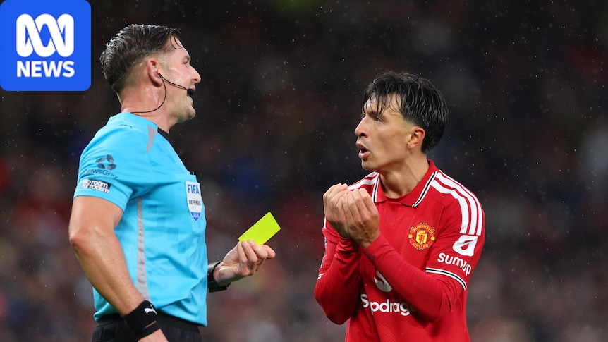
ABC News · 2026-11-28 20:35:04 UTC
Manchester United suffers unwanted records after 4-0 loss to Brentford
VIEW STORY ↗
ABC News · 2026-11-28 20:30:29 UTC
Divers barred from speaking out about rescue from notorious cave
VIEW STORY ↗MORE HEADLINES
Follow the reporting
The remaining 51 stories in the current source order.
Headlines 005—016 12 stories
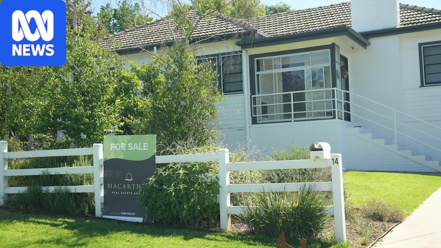
005ABC News · 2026-11-28 20:00:32 UTC
↗Sea change towns lead fall as housing downturn hits regional NSW
 006
006ABC News · 2026-11-28 20:00:03 UTC
↗Live: Jess Wilson begins work after emphatic victory
 007
007ABC News · 2026-11-28 19:44:03 UTC
↗008Piastri has best qualifying since September, world champ annoyed with team
ABC News · 2026-11-28 19:28:07 UTC
↗009Matildas' win just the tonic needed, as Colombian superstar drops jaws
ABC News · 2026-11-28 19:18:48 UTC
↗010Bondi terror attack hero Ahmed Al Ahmed awarded top bravery honour
ABC News · 2026-11-28 19:02:41 UTC
↗The 'lipstick effect' involves little luxuries in tough times
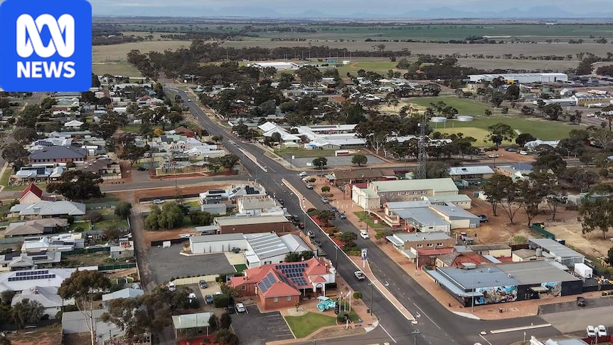
011ABC News · 2026-11-28 18:54:19 UTC
↗012Scientists don't know why a WA town has had 2,500 earthquakes
ABC News · 2026-11-28 18:51:39 UTC
↗How Huang's return exposes Trump's 'toxic' bromance with Big Tech
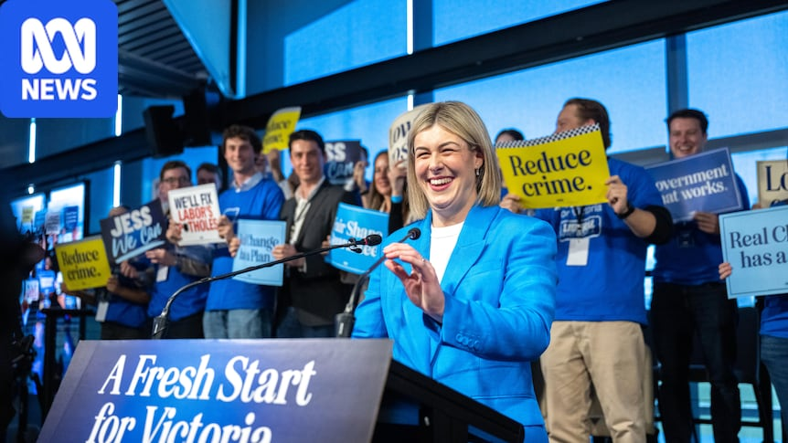
013ABC News · 2026-11-28 18:47:43 UTC
↗How Victoria will change under Jess Wilson's Coalition government
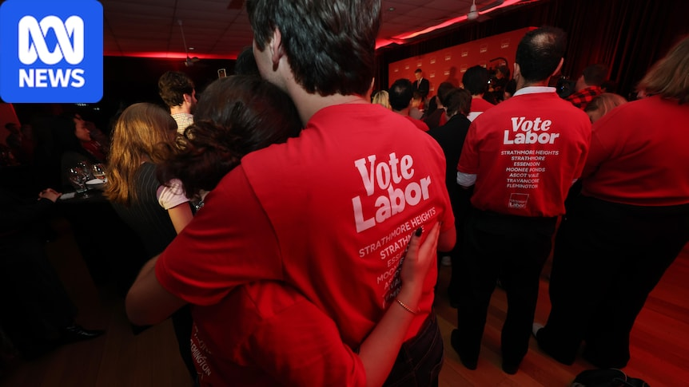
014ABC News · 2026-11-28 18:34:38 UTC
↗Labor's past and present ponder its future after historic loss
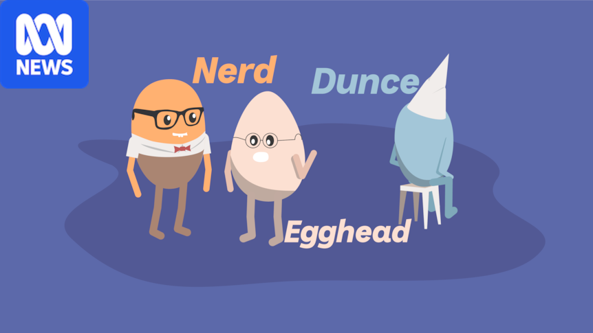
015ABC News · 2026-11-28 18:30:00 UTC
↗ABC Wordage quiz: Let's get nerdy
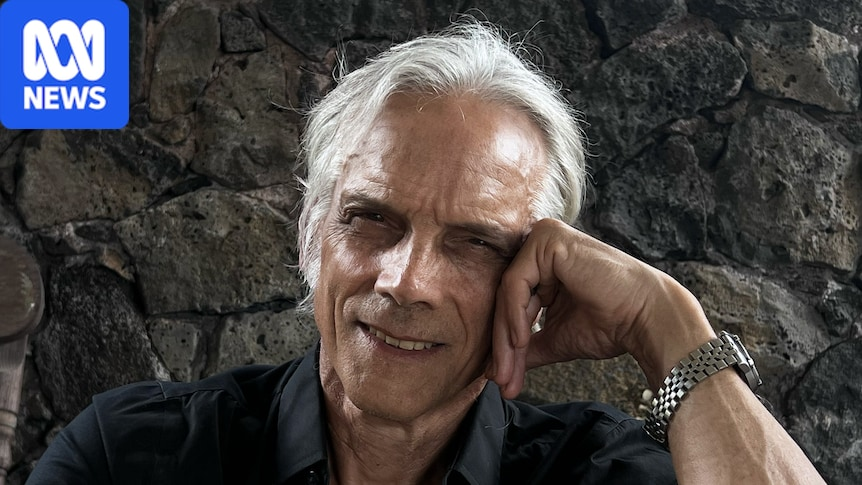
016ABC News · 2026-11-28 18:30:00 UTC
↗The many lives of Radio Birdman's Deniz Tek
Headlines 017—028 12 stories
017
ABC News · 2026-11-28 18:30:00 UTC
↗018From ET to Agro, movie puppet exhibition pulls on all the heartstrings
ABC News · 2026-11-28 18:00:00 UTC
↗A possible Xi successor is gone as 'death watch' grips Chinese politics
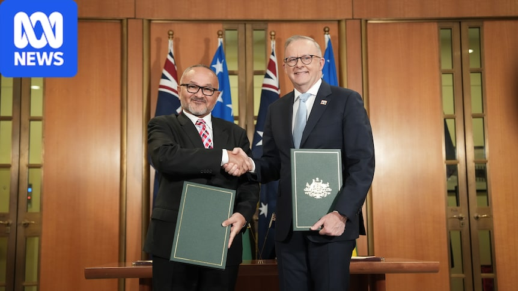
019ABC News · 2026-11-28 18:00:00 UTC
↗Four votes, one treaty and Australia's bid to turn the tide against China
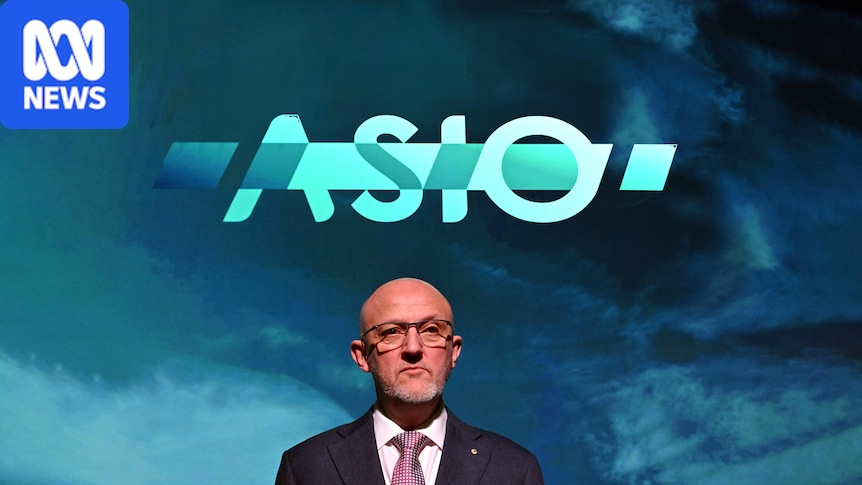
020ABC News · 2026-11-28 17:30:00 UTC
↗021The inside story of how an ASIO shake-up may have changed the odds on Bondi
SMH Business · 2026-11-28 11:55:00+11:00
↗022Baby bill shock: Data matching whacks tens of thousands of taxpayers
SMH Business · 2026-11-27 18:15:00+11:00
↗023Implosion: The downfall of China’s money king
SMH Business · 2026-11-27 17:36:26+11:00
↗024Metals rebound, AI bounce sends sharemarket higher
SMH Business · 2026-11-27 17:09:35+11:00
↗ASX Runners of the Week: Rincon, Infinity & Titomic
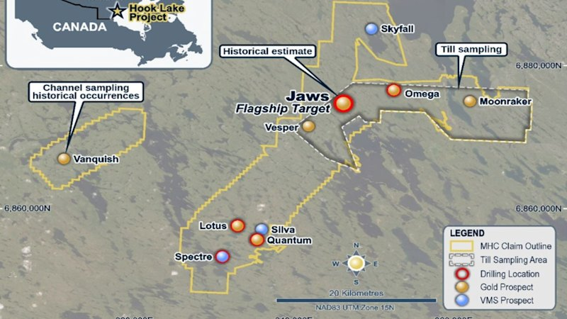
025SMH Business · 2026-11-27 15:56:34+11:00
↗026Manhattan scores $30M Canadian gold farm-in
SMH Business · 2026-11-27 14:18:53+11:00
↗Auric launches drilling blitz at newly acquired WA gold play
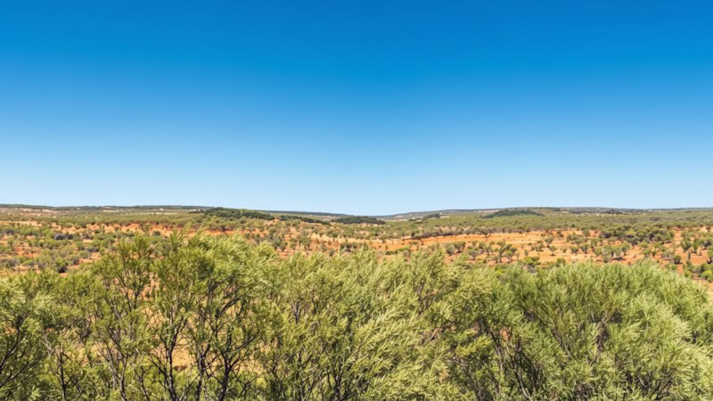
027SMH Business · 2026-11-27 14:17:42+11:00
↗028Barkly unveils five-fold NT rare earths resource jump
SMH Business · 2026-11-27 13:52:18+11:00
↗Media regulator raps ABC over ‘Jew’ answer in Hard Quiz episode
Headlines 029—040 12 stories
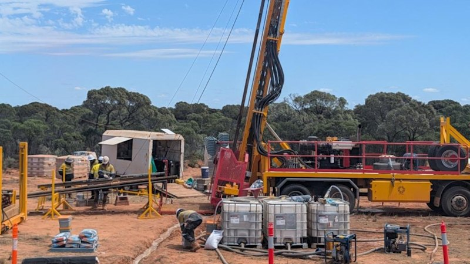
029SMH Business · 2026-11-27 12:51:48+11:00
↗030Drill bit pierces Nullarbor cover in Artemis, Red Metal copper hunt
SMH Business · 2026-11-27 11:52:06+11:00
↗David Jones is bleeding out. Here’s what can save it
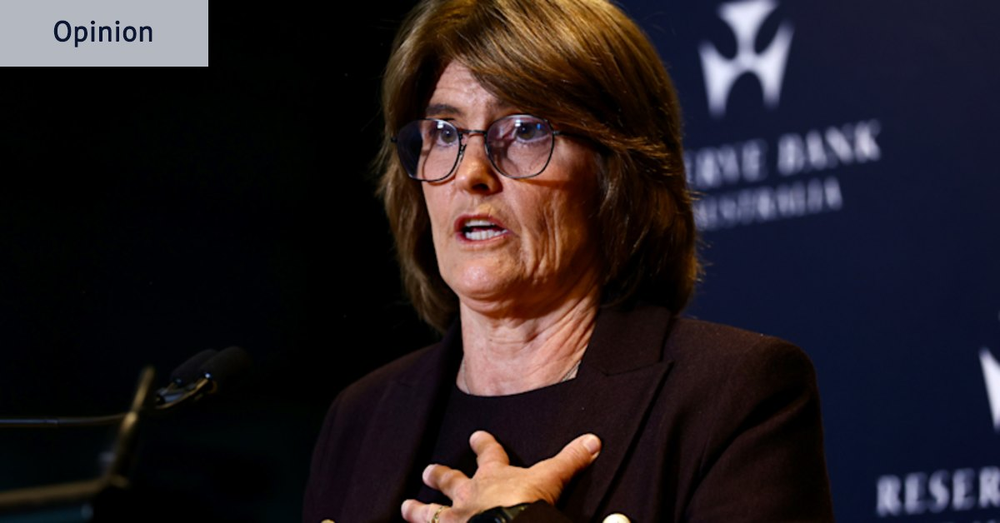
031SMH Business · 2026-11-27 11:45:00+11:00
↗032The RBA has forgotten its job description and must cut rates ASAP
SMH Business · 2026-11-27 05:01:00+11:00
↗033I’ve applied for 100 board roles with no interviews. How do I break in?
SMH Business · 2026-11-27 05:00:00+11:00
↗034There’s a number the RBA has been hiding. Here’s why
SMH Business · 2026-11-27 05:00:00+11:00
↗Gold china, Maine lobster and a billionaire host: Inside Joe Aston’s fourth trip to Trump’s Mar-a-Lago
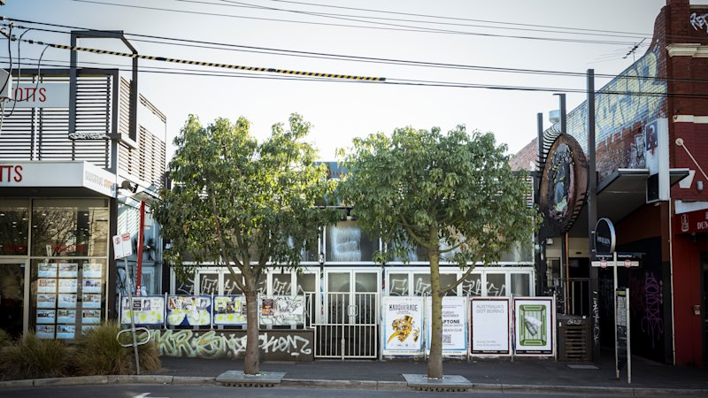
035SMH Business · 2026-11-27 05:00:00+11:00
↗Macca’s opens controversial Northcote store, buys Alphington site for $8.1m
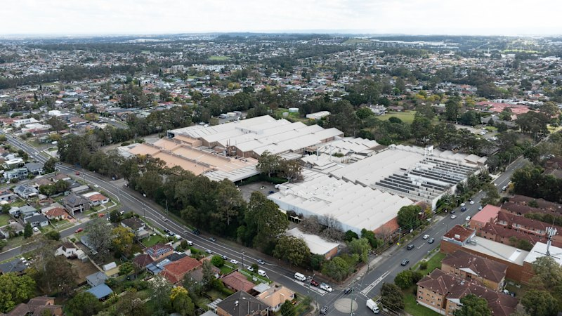
036SMH Business · 2026-11-27 05:00:00+11:00
↗037Old Bonds factory hits the market again after Bathla collapse
SMH Business · 2026-11-26 19:30:00+11:00
↗‘Rightful share’: Heiress takes billionaire father to court as family feud heats up
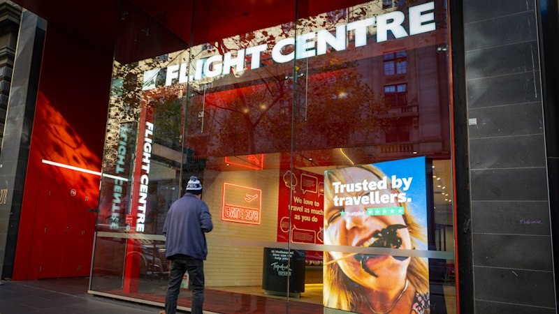
038SMH Business · 2026-11-26 16:31:18+11:00
↗Flight Centre hit by cyber incident affecting ‘significant number’ of customers
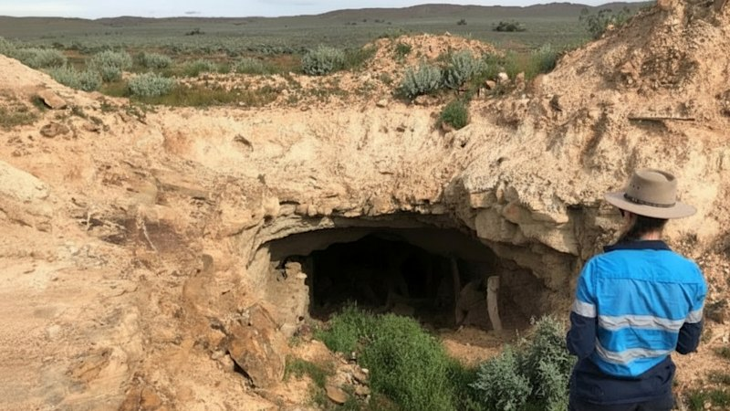
039SMH Business · 2026-11-26 15:09:25+11:00
↗Broken Hill Gold swoops on two historic SA goldfields
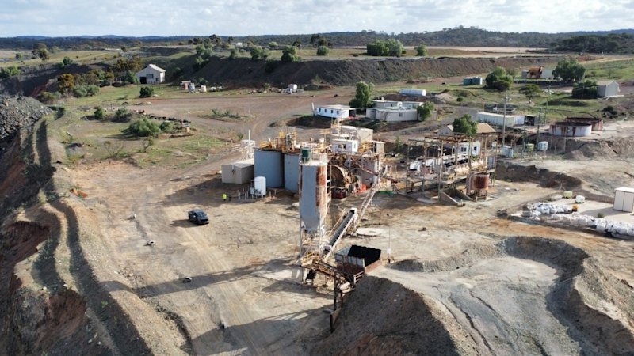
040SMH Business · 2026-11-26 14:32:15+11:00
↗Auric beefs up gold inventory ahead of WA Munda mine restart
Headlines 041—052 12 stories
041
MacroBusiness · 2026-11-27 23:33:50 UTC
↗042More privatisation is not the solution for Victoria
MacroBusiness · 2026-11-27 13:01:45 UTC
↗043Weekend reading and MB media appearances
MacroBusiness · 2026-11-27 01:00:01 UTC
↗044Incoming Victorian premier Jess Wilson needs to consult Jeff Kennett
MacroBusiness · 2026-11-27 00:30:48 UTC
↗045Ratbag tinpot dictator opens iron ore SWF
MacroBusiness · 2026-11-27 00:00:11 UTC
↗046New Zealand housing: the forever crash
MacroBusiness · 2026-11-26 23:30:46 UTC
↗The future of AI
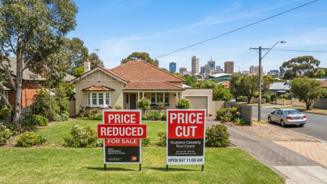
047MacroBusiness · 2026-11-26 23:00:17 UTC
↗048Adelaide’s record-breaking housing correction
MacroBusiness · 2026-11-26 22:30:16 UTC
↗049Gas reservation is here (almost)
MacroBusiness · 2026-11-26 22:00:55 UTC
↗050Oils ain’t oils
MacroBusiness · 2026-11-26 21:00:14 UTC
↗051The Coalition could win 64 seats in Victoria and still need One Nation
MacroBusiness · 2026-11-26 13:01:12 UTC
↗Gerry Harvey: a recession is inevitable for Australia
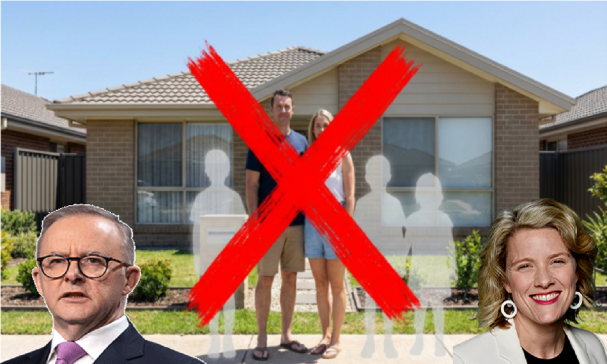
052MacroBusiness · 2026-11-26 01:00:12 UTC
↗